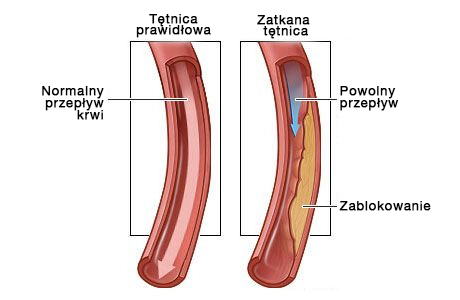

MEDYCYNA• INSTRUKCJA
Polski lekarz opowiada o zagrożeniach związanych z nadciśnieniem w starszym wieku
Co jest idealne do rozpuszczania blaszek cholesterolowych i poprawy krążenia?
 |
Tomasz Nowacki |

Miliony ludzi leczą tysiące różnych chorób stosami różnych leków, nie zdając sobie nawet sprawy, że źródłem zła nie jest miejsce, w którym występuje ból. Cholesterol jest niewidoczny, odkłada się cicho, powoli i niepostrzeżenie, dusząc wszystkie ważne dla życia organy.
Wraz z odkładaniem się cholesterolu w organizmie następuje lawinowy wzrost ryzyka wystąpienia chorób związanych ze zwężeniem lub zablokowaniem naczyń krwionośnych.
Jakie są zagrożenia związane z blaszkami cholesterolowymi?
Odkładanie się cholesterolu w ścianach naczyń krwionośnych zaczyna się aktywnie po 40 roku życia, a po 50 - z zadziwiającą szybkością. Powstałe w ten sposób "cholesterolowe" bariery utrudniają przepływ krwi. Stopniowo tworzy się blaszka miażdżycowa, a średnica naczynia staje się coraz mniejsza. To znacznie zwiększa ryzyko powstania skrzepu krwi blokującego naczynia krwionośne. W takim przypadku krew przestaje częściowo lub całkowicie dopływać do danego narządu, co prowadzi do poważnych zaburzeń w jego funkcjonowaniu lub śmierci.

Niebezpieczeństwo tkwi również w utajonym - bezobjawowym przebiegu choroby. Stan naczyń stale się pogarsza, a zaburzenia ujawniają się dopiero wtedy, gdy naczynia zmniejszą się o połowę. Nie da się dokładnie określić, jak objawi się miażdżyca, wszystko zależy od tego, który organ został pozbawiony niezbędnego odżywiania. Najczęściej miażdżyca dotyka naczyń serca, jelit, mózgu, aorty, nerek, kończyn dolnych i trzustki.
Nagromadzenie cholesterolu (miażdżyca) wpływa destrukcyjnie na wszystkie narządy i układy organizmu. Pytanie tylko, który organ będzie "najsłabszym ogniwem" i nie przetrwa jako pierwszy.
7 miejsc docelowych dla cholesterolu
Miażdżyca aorty
Miażdżyca aorty dotyczy największej tętnicy w organizmie. Aorta przypomina pień, od którego odchodzą inne mniejsze naczynia.
Aorta obejmuje 2 odcinki:
- Klatka piersiowa
- Strona brzuszna
Klatka piersiowa dostarcza krew do organów znajdujących się w klatce piersiowej, jak również do głowy i szyi.
Aorta brzuszna kieruje krew do narządów położonych w jamie brzusznej i kończynach dolnych.
Choroba rozwija się w 2 etapach:
- W początkowym stadium nie ma zewnętrznych objawów choroby. Jednak już istniejące powikłania można wykryć za pomocą badań laboratoryjnych.
- Okresowi klinicznemu towarzyszą wyraźne objawy choroby.
Miażdżyca aorty piersiowej
W początkowym stadium patologii nie towarzyszą żadne objawy. Pierwszymi objawami są zazwyczaj bóle w klatce piersiowej, które mają charakter przerywany. Ból może zmniejszać się, zwiększać i nie ustępować przez kilka dni. Często towarzyszy mu uczucie duszności.
Inne objawy to podwyższone ciśnienie krwi i rozwój nadciśnienia.
Jeśli łuk aorty jest znacznie uszkodzony, występują trudności w połykaniu i głos staje się ochrypły. Zmianom miażdżycowym aorty piersiowej może towarzyszyć porost włosów na uszach. Na twarzy pojawiają się zmiany tłuszczowe i następuje przedwczesne siwienie.

Inne objawy uszkodzenia aorty piersiowej:
- ból promieniujący do ramienia, kręgosłupa szyjnego i lędźwiowego;
- podwyższone ciśnienie krwi;
- stuknięcie między żebrami po prawej stronie klatki piersiowej;
- szum w głowie;
- zawrót głowy;
- ból w szyi przy próbie odwrócenia głowy.
Na tle niedostatecznego ukrwienia serca rozwijają się następujące patologie:
- аритмия;
- niewydolność serca;
- dusznica bolesna;
- zawał serca.
Zmiany w aorcie piersiowej są często łączone z miażdżycowymi zmianami w tętnicach wieńcowych oraz zmianami w naczyniach mózgowych.
Miażdżyca aorty brzusznej
Zmianom miażdżycowym aorty brzusznej towarzyszą zaburzenia ze strony układu pokarmowego i objawiają się następującymi symptomami:
- Dolegliwości bólowe brzucha. Mają one charakter ataku. Często pacjent nie potrafi wskazać dokładnej lokalizacji bólu;
- Zaburzenia stolca;
- Meteoryzm;
- Zgaga;
- Burczenie i nutka goryczki;
- Zakrzepica tętnicy trzewnej. Jest to niebezpieczne powikłanie, które może być śmiertelne. Towarzyszy jej martwica pętli jelitowych i rozległy stan zapalny. Schorzeniu towarzyszy bardzo silny ból, którego nie można uśmierzyć środkami przeciwbólowymi.
W wyniku tworzenia się blaszek miażdżycowych w tym obszarze dochodzi do upośledzenia ukrwienia narządów miednicy. Późniejsze powikłania mogą obejmować niewydolność nerek i chorobę tętnic trzewnych.
Naczynia mózgowe
Cholesterol, który prowadzi do miażdżycy naczyń mózgowych, niszczy zarówno naczynia wewnątrzczaszkowe, jak i pozaczaszkowe. Nasilenie objawów patologicznych jest bezpośrednio związane ze stopniem i lokalizacją zmian chorobowych.
Oprócz najgroźniejszego powikłania udaru, można zaobserwować zahamowanie czynności ośrodkowego układu nerwowego, rozwój zaburzeń psychicznych, upośledzenie wzroku i pamięci.

Pierwsze objawy zmiany pojawiają się w dojrzałym wieku 40-45 lat.
Na tym etapie możliwe jest ujawnienie się "ataków niedokrwiennych", którym towarzyszą zaburzenia czucia, koordynacji, zaburzenia widzenia, słuchu i mowy. Mimo nasilenia objawów, w tym okresie są one krótkotrwałe, odwracalne i ustępują samoistnie po jednorazowym oczyszczeniu naczyniowym za pomocą nutraceutyków.
Ciężkie zmiany miażdżycowe mogą prowadzić do udaru mózgu, czyli martwicy tkanki mózgowej. Objawy są takie same jak w poprzednim przypadku, ale nie ma znaczącej poprawy po martwicy.
Mózg jest również odpowiedzialny za wyższe funkcje umysłowe. Dlatego tworzenie się płytki prowadzi również do pogorszenia intelektu i pamięci, zmian charakterologicznych (labilność nastrojów, kapryśność, lenistwo). W przypadku braku działań terapeutycznych mających na celu uwolnienie naczyń krwionośnych od blaszek miażdżycowych, zmiana ta prowadzi do rozwoju demencji, choroby Alzheimera. Takie powikłania są niebezpieczne i mogą prowadzić do kalectwa lub śmierci.
Istnieją dwa rodzaje udaru:
- niedokrwienny;
- krwotoczny.
Udar osiągnął już limit wieku. Nie jest już kojarzony z podeszłym wiekiem. Niedokrwienie spowodowane jest zablokowaniem łożyska naczyniowego przez skrzeplinę, przyczyną krwawienia jest pęknięcie naczyń mózgowych.
Serce
Jedną z przyczyn zgonów pacjentów z chorobami układu krążenia spowodowanymi odkładaniem się cholesterolu w naczyniach krwionośnych jest niedrożność głównej tętnicy wieńcowej.
Choroby takie jak choroba wieńcowa, dusznica bolesna i zawał serca są związane z tą zmianą.
Choroba wieńcowa jest ciężką patologią serca, która stanowi cały zespół zaburzeń. Obejmuje on dławicę piersiową, zawał mięśnia sercowego i miażdżycę.
Najczęstszym objawem choroby wieńcowej jest dławica piersiowa. W początkowym stadium jego manifestacja w postaci bólu w klatce piersiowej występuje tylko podczas wysiłku fizycznego. Jest to logiczne, ponieważ w spoczynku serce potrzebuje mniej tlenu, a podczas intensywnego wysiłku zapotrzebowanie to wzrasta. Taka reakcja może być na stres, niepokój emocjonalny. W miarę rozwoju miażdżycy i wzrostu nakładania się średnic łożyska naczyniowego, choroba wieńcowa staje się coraz bardziej widoczna. W późniejszych stadiach choroby każdy ruch pacjenta powoduje już ból
Klasyczne objawy dławicy piersiowej obejmują:
- występowanie bólu zarówno pod wpływem stresu, jak i w spoczynku;
- ból odczuwany jest za mostkiem i może przemieszczać się do barku (lewa strona), łopatki, ramienia. Ponadto, intensywność bólu
- intensywność bólu jest bezpośrednio związana z ciężkością ataku;
- ostry, miażdżący ból;
- atak może być kontrolowany przez zażycie tabletki nitrogliceryny;
- czas trwania ataku zostanie skrócony: nie więcej niż do pięciu minut.
Różnica między atakiem serca a dusznicą bolesną:
- ból o bardzo dużej intensywności;
- czas trwania ataku wynosi co najmniej 20 minut;
- nitrogliceryna nie pomaga na zawał serca;
- ból jest rozproszony.
Blaszka miażdżycowa spowodowana wysokim poziomem cholesterolu może doprowadzić do nagłej śmierci pacjenta. Sytuacja taka powstaje, gdy z powodu zaburzeń w dopływie krwi najpierw zmienia się rytm serca, a następnie dochodzi do jego zatrzymania.
Wszystkie naczyniowe choroby serca są poważne i niebezpieczne. bez w pełni funkcjonującego serca inne narządy nie mogą prawidłowo funkcjonować. Miażdżyca naczyń serca może również prowadzić do zawału mięśnia sercowego. Zawał serca jest spowodowany pęknięciem blaszki miażdżycowej i zatkaniem naczynia przez skrzep krwi. W wyniku tego krew przestaje dopływać do określonego obszaru mięśnia sercowego, a ten obumiera.
Po wystąpieniu zaburzeń kurczliwości mięśnia sercowego śmierć następuje w ciągu kilku godzin lub dni. Jednak nawet jeśli osoba ta zostanie uratowana, to i tak ma niewydolność układu krwionośnego, która bez oczyszczenia naczyń krwionośnych z cholesterolu, prędzej czy później doprowadzi do drugiego ataku. Dlatego też oczyszczanie naczyń krwionośnych za pomocą nutraceutyków jest bardzo ważne dla pacjentów, którzy przeszli zawał serca.
Dodatkowo na tle zaburzeń krążenia rozwija się nadciśnienie tętnicze. Towarzyszy temu dysfunkcja serca, procesy patologiczne w ośrodkowym układzie nerwowym i nerkach.
Nadciśnienie tętnicze występuje również na tle zmian w mózgu, nerkach, obwodowych naczyniach krwionośnych. W patologii mózgu objawia się to zaburzeniami świadomości, utratą wzroku oraz upośledzeniem funkcji nerek, co prowadzi do ich niewydolności.
Naczynia kończyn dolnych
Do zespołu objawów zmian w kończynach dolnych, które prowadzą do odkładania się złogów cholesterolu należą:
- podatność kończyn dolnych na zimno;
- skurcze;
- kuleć;
- owrzodzenia troficzne, naczyniowe "retikulacje" i "gwiazdy" po zmianach skórnych;
- żylaki;
- ból, który może występować zarówno podczas aktywności, jak i w spoczynku (może mieć różne natężenie);
- niszczenie tkanki chrzęstnej, rozwój choroby zwyrodnieniowej stawów.
Obok bolesnych doznań występują zaburzenia mięśniowo-szkieletowe. Objawy są podobne do tych z zaburzeniami pracy serca: w początkowej fazie, ból pojawia się tylko przy dużym wysiłku fizycznym i długich spacerach. W ostatnim stadium ból staje się nie do zniesienia nawet w spoczynku.
Głównym objawem występującym w przypadku zmian naczyniowych jest przerywane obrzęki. Odczucia bólowe lokalizują się głównie w mięśniach ud i łydek.
Niewystarczający dopływ krwi do kończyn dolnych, powoduje bladość i drętwienie skóry, a włosy na nogach zaczynają wypadać. Powstałe wrzody są niezwykle trudne do leczenia, wynika to z faktu, że procesy regeneracyjne nie są w pełni aktywowane z powodu braku dopływu krwi. W wyniku takich zmian prędzej czy później dochodzi do gangreny: tkanki obumierają. Przyjmowanie leków na tym etapie jest nieskuteczne. Gangrenę można wyleczyć tylko poprzez amputację.
Leczenie obejmuje fizykoterapię i zabiegi uzdrowiskowe, a także przyjmowanie nutraceutyków mających na celu zwalczanie miażdżycy.
Arterie nerkowe
W zmianach miażdżycowych naczyń zaopatrujących nerki w substancje odżywcze dochodzi do rozwoju wtórnej arteriozy. Charakterystycznym objawem jest obrzęk, który powstaje w wyniku zatrzymania sodu w organizmie, najcięższą sytuacją jest rozwój obrzęku płuc. Jedną z konsekwencji jest zawał nerki. Kiedy nerka jest dotknięta chorobą, objawy choroby nie są wyraźne.
Zablokowanie tętnicy nerkowej przez cholesterol prowadzi do powstania ostrej niewydolności nerek.
Są to główne przejawy miażdżycy tętnic nerkowych:
- nadciśnienie;
- obrzęk;
- zlokalizowany ból pleców;
- osłabienie, utrata sił.
Jak pozbyć się blaszek miażdżycowych?
Leczenie polega na systematycznym oczyszczaniu naczyń krwionośnych. Co najmniej raz na 5 lat od 40 roku życia w przypadku mężczyzn i 45 roku życia w przypadku kobiet.
Do niedawna niemożliwe było pozbycie się istniejących blaszek miażdżycowych, a terapia polegała na spowolnieniu powstawania nowych blaszek.
Ale wszystko zmieniło się wraz z odkryciem nutraceutyków.
Nowoczesne środki przeciw blaszkom cholesterolowym (nutraceutyki) umożliwiają oczyszczanie naczyń krwionośnych w domu, bez nadzoru specjalistów. Najważniejsze jest, aby obserwować czas trwania leczenia. Efektywny czas trwania leczenia wynosi 1,5 miesiąca.
Nutraceutyki usuwają od 89% do 97% złogów cholesterolu z naczyń krwionośnych, tętnic i naczyń włosowatych w ciągu 1,5 miesiąca. (około 3,7 kg)
Czym są krople Cardiofort?
Krople Cardiofort należą do najnowszej klasy leków stosowanych w leczeniu i profilaktyce miażdżycy naczyń krwionośnych.
Krople Cardiofort łączą w sobie bezpieczeństwo i wysoką skuteczność w walce z odkładaniem się złogów cholesterolowych.
Krople Cardiofort są zatwierdzone do samodzielnego podawania w leczeniu miażdżycy i jej skutków.
Naturalne krople Cardiofort ze wszystkich nutraceutyków całkowicie eliminują skutki uboczne i powikłania, dlatego polecane są osobom starszym i cierpiącym na choroby przewlekłe.
Jak nutraceutyki działają na organizm?
Krople Cardiofort pracują w 3 etapach:
- 1. Likwidacja złogów cholesterolu. Rozpuszczają blaszki miażdżycowe, skrzepy krwi i wapno. Zwiększają światło naczyń krwionośnych i przywracają krążenie krwi.
- 2. Likwiduje skutki niedostatecznego krążenia krwi. Nadciśnienie, bóle głowy, żylaki, cukrzyca typu 2, zakrzepica i hemoroidy są całkowicie lub w znacznym stopniu wyleczone. Znikają szumy uszne, zawroty głowy, poprawia się ostrość widzenia i jasność umysłu.
- 3. Poprawiają wytrzymałość i elastyczność ścian naczyń krwionośnych. Zapobiega to tworzeniu się nowych blaszek miażdżycowych i 11-krotnie zmniejsza ryzyko udaru mózgu.
«Cardiofort»

Krople "Cardiofort" dzisiaj to nowoczesny nutraceutyk 5 generacji o unikalnym działaniu, który rozpuszcza do 97% złogów cholesterolowych i dwukrotnie zwiększa światło naczyń krwionośnych, przywracając krążenie krwi.
Działanie opiera się na zdolności cząsteczek substancji czynnej do wnikania do blaszek miażdżycowych przez powłokę włóknistą. Efekt ten zapewnia rozpuszczenie złogów cholesterolowych, co do niedawna było niemożliwe.
Stosowanie kropel Cardiofort przez 2 miesiące 2 razy dziennie na pusty żołądek daje następujące rezultaty:
- Eliminuje do 97% blaszek miażdżycowych.
- Wzmacnia ściany naczyń krwionośnych.
- Normalizuje ciśnienie krwi.
- Stabilizuje poziom cukru we krwi.
- Przywraca funkcjonalną aktywność mózgu i układu nerwowego.
- Zatrzymuje proces starzenia się mięśnia sercowego.
- Zmniejsza ryzyko wystąpienia zawału mięśnia sercowego.
- Wzmacnia barierę antyoksydacyjną.
- Poprawia krążenie wieńcowe i mózgowe.
- Normalizuje metabolizm minerałów w mięśniu sercowym.
Przekonaj się sam
Krople Cardiofort
Pacjentka
kobieta, 67 lat. Na początku leczenia stwierdzono rozległe zmiany w aorcie piersiowej i brzusznej z obecnością złogów cholesterolu. Zaburzenia krążenia w narządach jamy brzusznej, płucach i oskrzelach.
kobieta, 67 lat. Na początku leczenia stwierdzono rozległe zmiany w aorcie piersiowej i brzusznej z obecnością złogów cholesterolu. Zaburzenia krążenia w narządach jamy brzusznej, płucach i oskrzelach.
Powikłania towarzyszące:
Nadciśnienie tętnicze III stopnia, obrzęki kończyn dolnych, żylaki, arytmia, stan przedcukrzycowy.
Nadciśnienie tętnicze III stopnia, obrzęki kończyn dolnych, żylaki, arytmia, stan przedcukrzycowy.
Skargi pacjentów:
bóle głowy, zawroty głowy, szum w uszach, bóle i skurcze nóg, problemy ze snem, ciśnienie aż do kryzysu nadciśnieniowego.
bóle głowy, zawroty głowy, szum w uszach, bóle i skurcze nóg, problemy ze snem, ciśnienie aż do kryzysu nadciśnieniowego.
Przepis:
Krople Cardiofort 2 razy dziennie na pusty żołądek. Wizyta kontrolna po 30 dniach i 60 dniach.
Krople Cardiofort 2 razy dziennie na pusty żołądek. Wizyta kontrolna po 30 dniach i 60 dniach.
Ogólny angiogram naczyniowy pacjenta
Wyniki zabiegów
Na podstawie wyników 2-miesięcznej terapii kroplami Cardiofort uzyskano następujące wyniki:
- Ciśnienie krwi wróciło do normy. 130-139, 85-89. Co stanowi górną granicę normy.
- Nie występuje żadnych obrzęków.
- Poziom cukru nie przekracza 5,5 mmol/l.
- Nie obserwuje się objawów żylaków.
- Arytmia nie monitorowana, puls 73 bpm.
- Bóle głowy i szumy uszne nie dokuczają po pierwszym tygodniu przyjmowania leku.
- Znormalizowany sen.
- Zwiększona ostrość widzenia.
- Ogólny ton i samopoczucie uległy znacznej poprawie
Przepływ krwi do mózgu został przywrócony
Pacjent
mężczyzna, 51 lat. Na początku leczenia obserwowano znaczną niedrożność krążenia mózgowego.
mężczyzna, 51 lat. Na początku leczenia obserwowano znaczną niedrożność krążenia mózgowego.
Powiązane powikłania:
Wysokie ciśnienie krwi, zmętnienie rogówki, osteochondroza szyjna i piersiowa, przewlekłe zapalenie gruczołu krokowego, ostre hemoroidy, hiperglikemia.
Wysokie ciśnienie krwi, zmętnienie rogówki, osteochondroza szyjna i piersiowa, przewlekłe zapalenie gruczołu krokowego, ostre hemoroidy, hiperglikemia.
Skargi pacjenta: bóle głowy,
niewyraźne widzenie, zamazane widzenie. Ogólne osłabienie i apatia, niechęć do robienia czegokolwiek. Niska wydajność, niezdolność do koncentracji przez dłuższy czas, brak energii.
niewyraźne widzenie, zamazane widzenie. Ogólne osłabienie i apatia, niechęć do robienia czegokolwiek. Niska wydajność, niezdolność do koncentracji przez dłuższy czas, brak energii.
Przepis:
Krople Cardiofort 2 razy dziennie na pusty żołądek. Wizyta kontrolna po 30 dniach i 60 dniach
Krople Cardiofort 2 razy dziennie na pusty żołądek. Wizyta kontrolna po 30 dniach i 60 dniach
Wyniki zabiegów
1,5-miesięczna kuracja kroplami Cardiofort dała następujące rezultaty:
- Ciśnienie krwi jest całkowicie w normie.
- Ustabilizowany poziom cukru.
- Bóle głowy ustąpiły.
- Zwiększona wydajność i aktywność.
- Energia znacznie wzrosła.
- Hemoroidy zniknęły.
- Zniknęły bóle pleców, szyi i stawów.
- Zwiększona ostrość widzenia.
- Brak objawów zapalenia gruczołu krokowego.
Istotna wada Cardiofort
Jedyną i w zasadzie główną wadą Cardiofort nutraceutyków jest ich cena.
Ma to sens, ponieważ nutraceutyki są ostatnimi produktami o wysokich kosztach produkcji. Naturalny skład jest bardzo wymagający pod względem warunków przechowywania i przetwarzania, co znacznie podnosi koszty produkcji.
W większości aptek sieciowyc Cardiofort nie jest dostępny po prostu dlatego, że jest drogi. A lekarze nie podejmują ryzyka przepisania tak drogiego leku.
Raz w roku producent Cardiofort wraz z Międzynarodową Komisją Cholesterolową organizują Dzień Bonusowy Wszystkie osoby, które potrzebują oczyścić naczynia krwionośne, obniżyć poziom cukru we krwi i ciśnienie krwi mogą otrzymać Cardiofort z rabatem
Zapamiętaj tę datę:
– To Międzynarodowy Dzień Zwalczania Cholesterolu.
Tego dnia możesz zamówić krople Cardiofort w obniżonej cenie, ale musisz spełnić kilka warunków, aby to zrobić.
Warunki 50% ZNIŻKI na Cardiofort:
- Wyłącznie do użytku osobistego
Ma to na celu uniknięcie kontaktów z osobami nie będącymi sprzedawcami, które próbują kupić PRODUKT masowo i odsprzedać go z własnych powodów. - Aplikuj za pośrednictwem oficjalnej strony internetowej.
Zakupy za pośrednictwem oficjalnej strony internetowej to gwarancja jakości i ochrona przed spekulacją.
Więc nie zwlekaj, zamów Cardiofort w tej chwili. Ponieważ następnego dnia nie będziesz w stanie kupić produkt po obniżonej cenie.
OPINJE